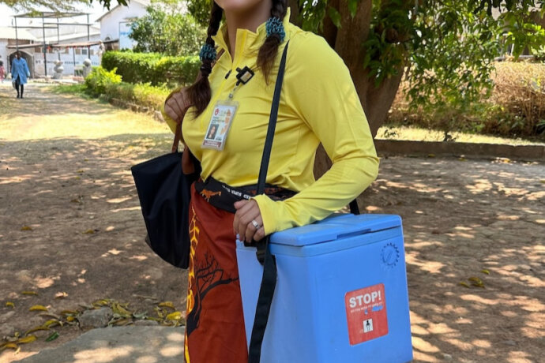

- FIND CARE
FIND CARE LINKS
- ABOUT US
ABOUT US LINKS
- HOW TO HELP
HOW TO HELP LINKS


Patient Care
Individually, we’re the best and brightest minds in medical research, teaching, and innovation. Together, we’re a formidable team of problem solvers delivering life-changing care.
Patient Care
With over 1,600 medical and dental providers committed to healing, find a provider that’s willing to do everything it takes.

Care Spotlight
As the only NCI-designated cancer treatment center in South Texas, we are redefining patient care through advanced research, clinical trials, and individualized therapies.
